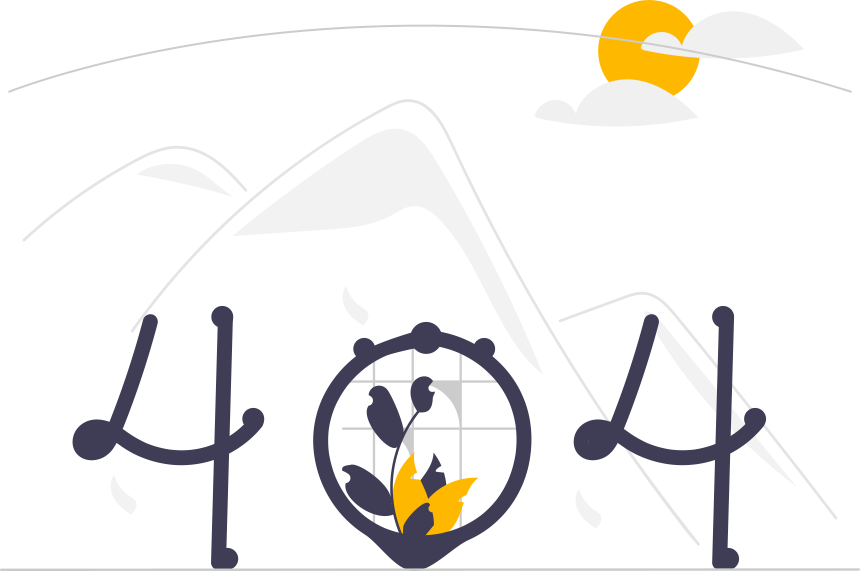

<ion-header [translucent]="true">
  <ion-toolbar>
    <ion-buttons slot="start">
      <ion-menu-button></ion-menu-button>
    </ion-buttons>
    <ion-title>Error 404</ion-title>
  </ion-toolbar>
</ion-header>

<ion-content>
  <viaje-component></viaje-component>
  <div id="container">
    
    <ion-label routerLink="/inicio">Perdido? volver a <a>Inicio</a></ion-label>
  </div>

</ion-content>